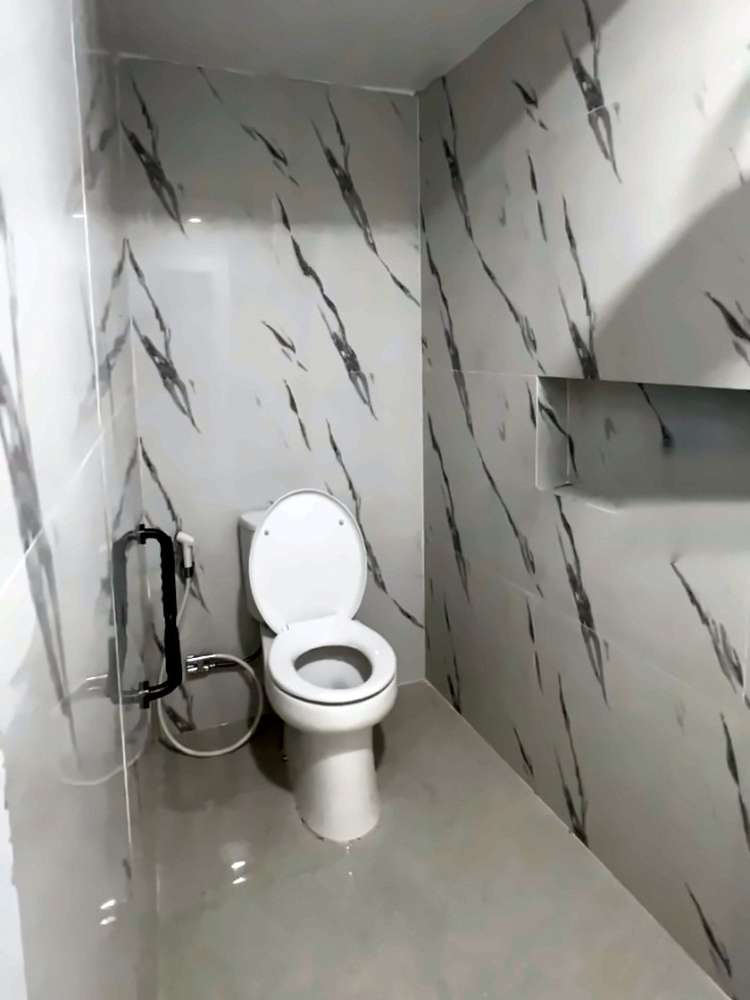
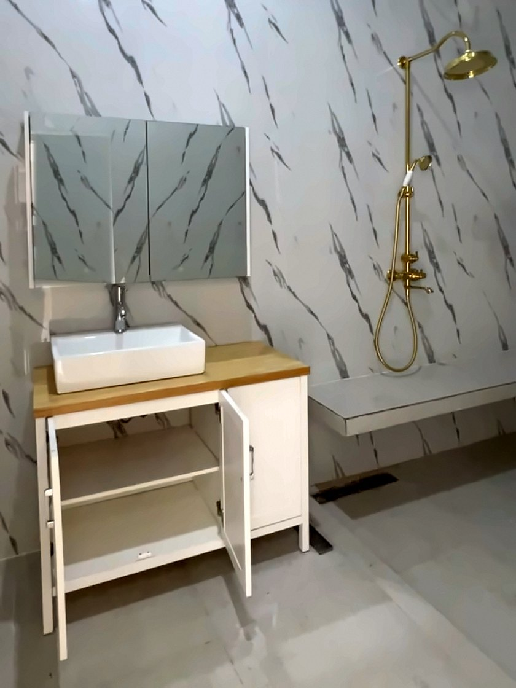
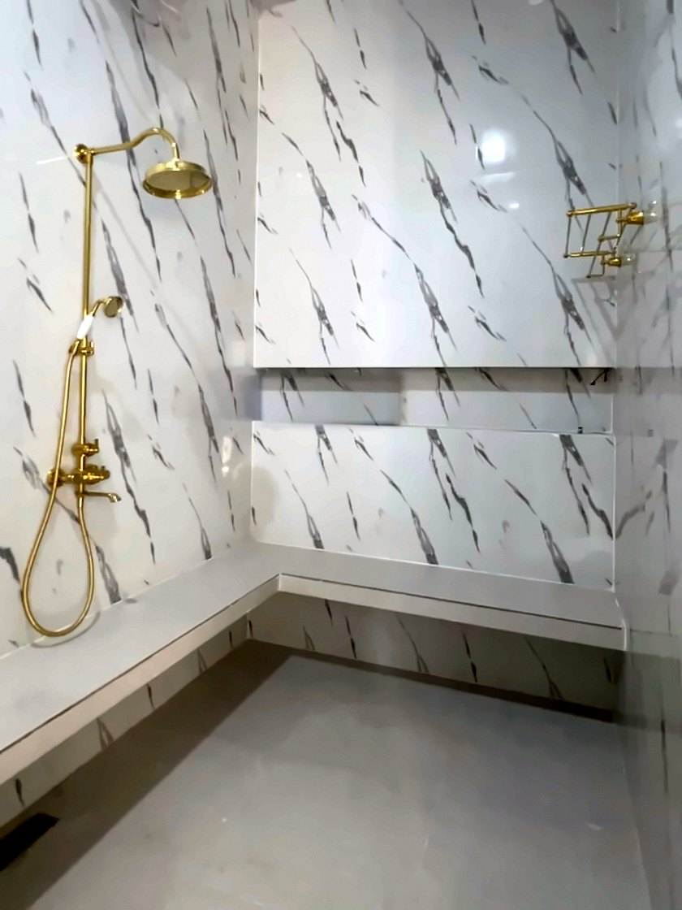

Jasa Bangun Rumah di Jabodetabek.
Dari survey lokasi, desain, dan RAB, sampai serah kunci. Kafani Jaya Property membangun rumah di Jabodetabek dengan biaya dan lingkup pekerjaan yang jelas sejak awal.

Apa yang termasuk, dan apa yang tidak.
Kami menyebutkan lingkup pekerjaan di awal supaya Anda tahu persis apa yang dibayar. Rincian akhir mengikuti gambar kerja, RAB, dan kontrak yang disepakati.
Termasuk dalam harga standar ±Rp4,5 jt/m²
Persiapan & struktur
- Persiapan area kerja dan pengukuran bangunan
- Pekerjaan pondasi sesuai gambar dan RAB
- Sloof, kolom, balok, dan ring balok
- Dinding bata ringan/bata merah sesuai spesifikasi
- Pelat lantai beton, apabila tercantum dalam gambar dan RAB
- Plesteran dan acian dinding
- Rangka dan penutup atap sesuai spesifikasi
Arsitektur & finishing
- Plafon sesuai spesifikasi
- Lantai keramik 60 × 60 cm, harga material standar maksimal Rp150.000/m²
- Keramik dinding kamar mandi sesuai spesifikasi RAB
- Pengecatan interior dan eksterior
- Pintu, kusen, dan jendela sesuai gambar dan RAB
- Perlengkapan kamar mandi sesuai daftar spesifikasi
- Pemasangan pagar
Plumbing & sanitasi
Dari air masuk sampai air terbuang, semuanya satu paket dengan pembangunan. Jumlah titik, kapasitas, merek, dan tipe perlengkapan mengikuti gambar kerja dan RAB.



- Air bersih Ground tank→ Pompa & booster pump→ Roof tank→ Wastafel, shower, kitchen sink
- Air kotor & bekas Kloset, floor drain, wastafel→ Pipa air kotor & bekas→ Septic tank
- Air hujan Atap→ Pipa air hujan→ Saluran
Sistem air bersih
- Instalasi pipa air bersih
- Pemasangan pompa air
- Pemasangan booster pump
- Pemasangan roof tank
- Pemasangan ground tank
- Titik air untuk wastafel, shower, dan kebutuhan lain sesuai gambar
Air kotor, air bekas & air hujan
- Instalasi pipa air kotor, dari kloset menuju septic tank
- Instalasi pipa air bekas
- Instalasi pipa dan saluran air hujan
- Septic tank sesuai kapasitas dan spesifikasi RAB
Pekerjaan sanitari
- Kloset duduk dan kloset jongkok
- Urinoir
- Wastafel dan meja cuci tangan
- Kitchen sink
- Shower
- Floor drain
- Jet washer
- Perlengkapan sanitari lain sesuai RAB
Instalasi listrik
- Kabel listrik di dalam bangunan
- Pipa/conduit kabel
- Sakelar dan stopkontak sesuai jumlah titik dalam gambar
- Titik lampu dan fitting sesuai spesifikasi
- Panel listrik dan MCB sesuai RAB
- Pengujian instalasi listrik sebelum serah terima
Penyelesaian
- Pembersihan sisa material pekerjaan utama sebelum serah terima
- Pemeriksaan hasil pekerjaan sesuai lingkup kontrak dan RAB
- Serah terima dengan pengecekan bersama pemilik
- Garansi pekerjaan 6 bulan, ketentuan lengkap sesuai kontrak
Yang tidak termasuk, dan ketentuannya.
Tidak termasuk
Berada di luar harga kontrak, kecuali dicantumkan tertulis dalam RAB atau perjanjian.
- Pengeboran sumur dan penyediaan sumber air tanah
- Pemasangan kanopi, termasuk rangka dan penutupnya
- Sambungan resmi listrik PLN, biaya penyambungan baru, dan penambahan daya
- Sambungan resmi air PAM/PDAM dan biaya administrasinya
- Pekerjaan taman, rumput, tanaman, dan lanskap
- Furnitur lepas, seperti sofa, meja, tempat tidur, lemari, dan dekorasi
- AC, CCTV, alarm, internet, dan perangkat elektronik lainnya
- Biaya perizinan, PBG/SLF, pajak, serta biaya administrasi pemerintah
- Pekerjaan tambahan atau perubahan desain atas permintaan pemilik setelah RAB disepakati
Butuh salah satunya? Bisa dihitung sebagai pekerjaan tambahan.
Tanyakan via WhatsApp ↗Ketentuan material & pekerjaan tambahan
- Keramik lantai
- Standar 60 × 60 cm dengan harga material maksimal Rp150.000/m². Jika Anda memilih material di atas batas itu, selisihnya menjadi biaya tambahan. Biaya pemasangan, pemotongan khusus, atau waste material hanya dihitung jika timbul dan disepakati lebih dulu.
- Kloset
- Merek TOTO dengan tipe yang disepakati sebelum pembelian. Perubahan tipe atau model di luar spesifikasi standar dapat menimbulkan biaya tambahan.
- Kanopi dan sumur bor
- Tidak termasuk harga standar, dan dapat dihitung sebagai pekerjaan tambahan apabila diminta pemilik.
- Perubahan pekerjaan
- Setiap tambahan atau perubahan lingkup perlu disetujui kedua belah pihak lebih dulu, termasuk biaya dan pengaruhnya terhadap jadwal.
- Acuan utama
- Gambar kerja, RAB, spesifikasi material, dan kontrak yang disepakati. Jika ada perbedaan, lingkup dikonfirmasi tertulis sebelum dilaksanakan.
Gambaran biaya bangun rumah.
Perhitungan memakai harga standar ±Rp4,5 - 5,5 juta per m². Setiap proyek punya nilai berbeda, tergantung desain, spesifikasi material, dan kondisi lokasi. Biaya final ditentukan setelah survey dan RAB.
Untuk rumah 100–150 m², waktu pembangunan sekitar 4 bulan. Biaya belum termasuk pekerjaan yang dihitung terpisah dan kondisi khusus lokasi. Ingin hitung luas lain? Gunakan simulasi biaya.
Lima langkah, tanpa kejutan.
-
Konsultasi
Ceritakan kebutuhan, lokasi, dan anggaran Anda melalui WhatsApp atau formulir.
-
Survey lokasi
Tim kami meninjau lokasi proyek untuk pengukuran.
-
Desain & RAB
Gambar kerja dan Rencana Anggaran Biaya yang rinci dan transparan.
-
Pembangunan
Pengerjaan oleh tim lapangan dengan laporan progres berkala.
-
Serah terima
Pengecekan akhir bersama sebelum bangunan diserahkan kepada Anda.
Sistem pembayaran
Pembayaran bertahap dengan sistem termin. Uang muka (DP) 30%, sisanya dibayarkan bertahap sesuai kesepakatan.
Garansi 6 bulan
Pekerjaan kami dilengkapi garansi 6 bulan. Ketentuan lengkapnya mengikuti kontrak yang disepakati.
Area layanan
Jabodetabek. Konsultasikan lokasi proyek Anda melalui WhatsApp untuk memastikan.
Legalitas
Kafani Jaya Property beroperasi dengan legalitas dan perizinan usaha yang lengkap.
Pertanyaan yang sering diajukan.
Berapa biaya jasa bangun rumah per meter persegi?
Harga standar bangun rumah di Kafani Jaya Property adalah ±Rp4,5 juta per m². Angka ini patokan awal, sedangkan biaya tiap proyek berbeda tergantung desain, spesifikasi material, dan kondisi lokasi. Sebagai gambaran, rumah 120 m² dengan harga standar memiliki estimasi awal sekitar Rp540 juta. Angka final ditentukan setelah survey lokasi dan penyusunan Rencana Anggaran Biaya (RAB).
Apa saja yang sudah termasuk dalam harga?
Harga standar mencakup pekerjaan persiapan dan struktur (pondasi, sloof, kolom, balok, dinding, plesteran, rangka dan penutup atap), arsitektur dan finishing (plafon, lantai keramik 60 × 60 cm, pengecatan, pintu, kusen, jendela, dan pagar), plumbing dan sanitasi (instalasi air bersih, pompa air dan booster pump, roof tank dan ground tank, instalasi air kotor, air bekas, dan air hujan, septic tank, serta pekerjaan sanitari seperti kloset, urinoir, wastafel, kitchen sink, shower, floor drain, dan jet washer), serta instalasi listrik di dalam bangunan. Semuanya mengikuti gambar kerja dan RAB.
Apa saja yang tidak termasuk dalam harga?
Pekerjaan di luar harga kontrak antara lain pengeboran sumur, kanopi, sambungan resmi listrik PLN dan air PAM/PDAM, taman dan lanskap, furnitur lepas, AC, CCTV dan perangkat elektronik, biaya perizinan (PBG/SLF) dan pajak, serta pekerjaan tambahan atau perubahan desain setelah RAB disepakati. Pekerjaan tersebut baru masuk hitungan jika dicantumkan tertulis dalam RAB atau perjanjian.
Berapa lama waktu pembangunan rumah?
Durasi menyesuaikan luas bangunan. Untuk rumah dengan luas 100–150 m², estimasi waktu pembangunan sekitar 4 bulan. Jadwal pasti disepakati bersama setelah desain dan RAB final.
Bagaimana sistem pembayarannya?
Pembayaran dilakukan bertahap dengan sistem termin. Uang muka (DP) sebesar 30%, dan sisanya dibayarkan bertahap sesuai kesepakatan.
Apakah ada garansi pekerjaan?
Ya, pekerjaan kami dilengkapi garansi 6 bulan. Ketentuan lengkapnya mengikuti kontrak yang disepakati.
Bagaimana ketentuan keramik lantai dan kloset?
Keramik lantai standar berukuran 60 × 60 cm dengan harga material maksimal Rp150.000/m². Jika Anda memilih material di atas batas itu, selisih harganya menjadi biaya tambahan. Kloset menggunakan merek TOTO dengan tipe yang disepakati sebelum pembelian, dan perubahan tipe di luar spesifikasi standar dapat menimbulkan biaya tambahan.
Bagaimana jika saya ingin menambah atau mengubah pekerjaan?
Setiap tambahan atau perubahan lingkup pekerjaan perlu disetujui kedua belah pihak terlebih dahulu, termasuk biaya dan pengaruhnya terhadap jadwal. Gambar kerja, RAB, spesifikasi material, dan kontrak menjadi acuan utama pelaksanaan.
Wilayah mana saja yang dilayani?
Kami melayani pembangunan rumah di Jabodetabek. Silakan konsultasikan lokasi proyek Anda melalui WhatsApp untuk memastikan.
Apakah konsultasi dikenakan biaya?
Konsultasi awal gratis. Ceritakan kebutuhan, lokasi, dan anggaran Anda melalui WhatsApp, dan tim kami akan membantu langkah berikutnya.
Mari mulai dari percakapan.
Ceritakan rencana rumah Anda. Kami bantu dari survey sampai RAB.